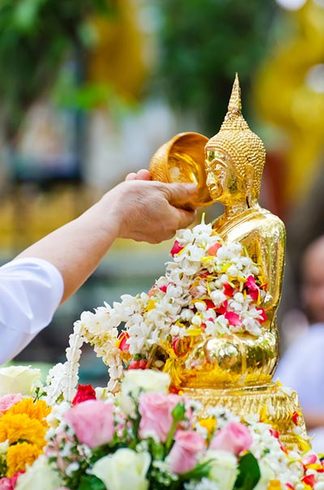

|
ความหมายของวันสงกรานต์ คำว่า "สงกรานต์" มาจากภาษาสันสกฤต ที่หมายถึง การเคลื่อนย้ายของดวงอาทิตย์จากราศีหนึ่งเข้าไปอีกราศีหนึ่ง ซึ่งเหตุการณ์เช่นนี้เป็นเหตุการณ์ที่เกิดขึ้นในทุก ๆ เดือน แต่ในช่วงเวลาที่ดวงอาทิตย์เคลื่อนย้ายจากราศีมีน เพื่อเข้าสู่ราศีเมษนั้น จะมีชื่อเรียกช่วงเวลาดังกล่าวว่า "มหาสงกรานต์" เนื่องจากเป็นวันขึ้นปีใหม่ตามคติพราหมณ์ แต่เราจะเรียกกันเพียงสั้น ๆ ว่า "สงกรานต์" เท่านั้น และเมื่อนับทางสุริยคติ "วันสงกรานต์" จะอยู่ระหว่างวันที่ 13-15 เมษายนของทุก ๆ ปี |
|
|  | วันสงกรานต์ ความหมายของคำที่เกี่ยวข้องกับวันสงกรานต์ - วันมหาสงกรานต์ หมายถึง การก้าวขึ้นหรือย่างขึ้นครั้งใหม่ หรือที่เรียกว่า "ปีใหม่"
และได้มีการกำหนดให้วันที่ 13 เมษายนของทุกปี เป็น "วันมหาสงกรานต์" |
|---|---|
ที่มา : https://hilight.kapook.com/view/21046 |
|